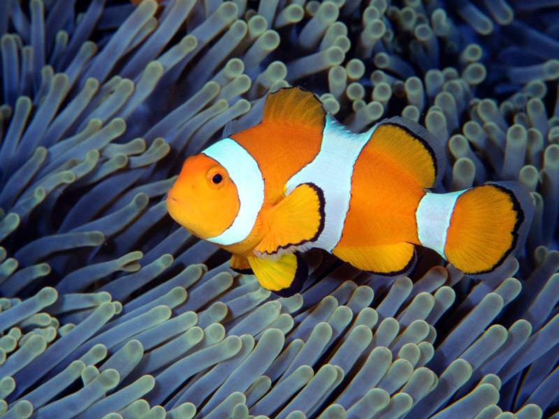

Рыба-клоун
Рыбы-клоуны, или амфиприоны[1] (лат. Amphiprion), — род лучоперых рыб из семейства помацентровыхч. Чаще всего под этим названием фигурирует аквариумная рыбка оранжевый амфиприон (Amphiprion percula). Для рыб-клоунов характерен симбиоз с различными видами актиний. Вначале рыба слегка касается актинии, позволяя ей ужалить себя и выясняя точный состав слизи, которым покрыта актиния, — эта слизь нужна актинии, чтобы она не жалила сама себя. Затем рыба-клоун воспроизводит этот состав и после этого может прятаться от врагов среди щупалец актинии. Рыба-клоун заботится об актинии — вентилирует воду и уносит непереваренные остатки пищи. Рыбки никогда не удаляются далеко от «своей» актинии. Самцы прогоняют от неё самцов, самки — самок. Территориальное поведение, видимо, стало причиной контрастной окраски. Протандрические гермафродиты: все молодые особи — самцы, однако в течение жизни рыба меняет пол. Стимул, запускающий смену пола, — гибель самки. Окраска рыб варьирует от насыщенно пурпурного до огненно-оранжевого, красного и жёлтого. 28 видов обитают в рифах Индийского и Тихого океанов — от Восточной Африки до Французской Полинезии и от Японии до Восточной Австралии[2].

Виды
- Amphiprion akallopisos Bleeker, 1853
- Amphiprion bicinctus Rüppell, 1830
- Amphiprion biaculeatus (=Premnas biaculeatus (Bloch, 1790))
- Amphiprion clarkii Bennett, 1830
- Amphiprion frenatus Brevoort, 1856 (=Prochilus polylepis Bleeker, 1877)
- Amphiprion latezonatus Waite, 1900
- Amphiprion nigripes Regan, 1908
- Amphiprion ocellaris Cuvier in Cuvier et Valenciennes, 1830
- Amphiprion percula (Lacépède, 1802) — Оранжевый амфиприон (=Lutjanus percula Lacépède, 1802)
- Amphiprion perideraion Bleeker, 1855 (=Amphiprion amamiensis Mori, 1966, Amphiprion rosenbergii Richardson, 1859-60)
- Amphiprion polymnus Linnaeus, 1758
Галирея
 |
 |
 |
 |
 |
|---|